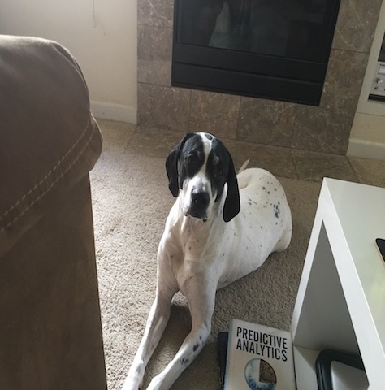
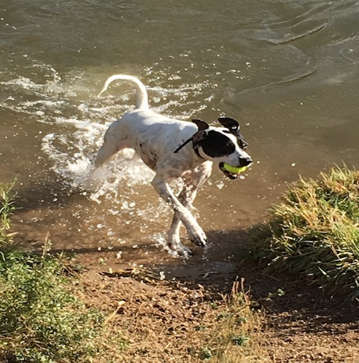

English Springer Spaniel‑KC
KC came into my life as a newborn puppy and at a time when I fortunately had the chance to spend a lot of time with him; training, learning and watching him grow as he required a lot of attention. He loved to go hiking, was an excellent pheasant hunter and lived to go swimming despite the initial terror of the water. He was very loving to other dogs which was helpful when he met his new sister Lucy.
Snow day
A little mischievous
One last hunt
English Pointer‑Lucy
I adopted Lucy when she was 6 months old, so KC could have a companion, from a local Colorado man that competes English Pointers in AKC trials. She came with some proper skills and training as a result and quickly became an elite bird dog. Nine years later Lucy still lives to pheasant hunt, and is intolerant of any cold weather - with the exception of pheasant hunting days. She loves to hike, run, swim, cuddle, sleep, and can find balls anywhere and will chase them for hours on end.
She is very intelligent evidenced by her light Sunday reading selection
Day at the beach
One pheasant was harmed during this prodution
Chihuahua‑Miniature Pinscher‑Fido
I met and became Fido's parent when he was approximately 13 years old and after he had spend the last several years with my now wife. Despite his age, he enjoyed hiking, camping, sitting on laps, escaping, nipping at fingers when placed a little too closely to his mouth, and also took a few hunting trips though he stayed in the truck sleeping on his blankets. Mr. Fido passed away three years ago now, after living well past his time.
Sun bathing
King of the castle
 Bath time
Bath time
Great Dane‑Howie
Howie is our newest family member and has caused us to revist Marmaduke comics because he is just as rambunctious as that well known Great Dane. He loves playing with Lucy - an activity which typically begins with his entire mouth around her head/neck, she is so tolerant. Howie also takes advantage of his size and stands on every piece of funiture in the house as though he belongs there, believes everything in his path is worth stepping on, and is surprisingly ok having his breakfast for lunch or at times, for dinner even. He is now almost a year old and his favorite toy is any dish towel he can drag off the kitchen counters and then rip to pieces.
Antenna up
Horse in his stable
Lounge chair